에너지관리기사 (2013-03-10 기출문제)
1과목: 연소공학
1. 보일러의 연소용 공기 압입 터보형 송풍기가 풍압이 부족하여 송풍기의 회전수를 1800rpm에서 2100rpm으로 올렸다. 이 때 회전수 증가에 의한 풍압은 약 몇 % 상승하겠는가?
- 14%
- 16%
- 36%
- 42%
(정답률: 60%)

2. 기체연료가 다른 연료보다 과잉공기가 적게 드는 가장 큰 이유는?
- 착화가 용이하기 때문에
- 착화 온도가 낮기 때문에
- 열전도도가 크기 때문에
- 확산으로 혼합이 용이하기 때문에
(정답률: 90%)
3. 유류용 연소방법과 장치에 대한 설명으로 틀린 것은?
- 버너팁의 탄화물의 부착은 불완전연소, 버너팁 폐색의 원인이 된다.
- 연소실 측벽의 탄소상 물질이 부착되는 것은 버너 무화의 불량이다.
- 화염이 스파크 모양의 섬광이 발생되는 것은 무화의 불량, 연료의 비중이 낮은 연료이다.
- 화염의 불안정은 무화용 스팀공급의 부적정이 원인이다.
(정답률: 67%)
4. 보일러 흡인 통풍(Induced Draft)방식에 가장 많이 사용하는 송풍기의 형식은?
- 터보형
- 플레이트형
- 축류형
- 다익형
(정답률: 79%)
5. 다음 중 고체연료의 공업분석에서 계산으로 산출되는 것은?
- 회분
- 수분
- 휘발분
- 고정탄소
(정답률: 91%)
6. 상온, 상압에서 프로판-공기의 가연성 혼합기체를 완전 연소시킬 때 프로판 1kg을 연소시키기 위하여 공기는 몇 kg이 필요한가? (단, 공기 중 산소는 23.15wt%이다.)
- 3.6
- 15.7
- 17.3
- 19.2
(정답률: 62%)
7. 미분탄 연소의 특징이 아닌 것은?
- 큰 연소실이 필요하다.
- 분쇄시설이나 분진처리시설이 필요하다.
- 중유연소기에 비해 소요 동력이 적게 필요하다.
- 마모부분이 많아 유지비가 많이 든다.
(정답률: 74%)
8. 다음 중 이론 공기량에 대하여 가장 옳게 나타낸 것은?
- 완전연소에 필요한 1차 공기량
- 완전연소에 필요한 2차 공기량
- 완전연소에 필요한 최대공기량
- 완전연소에 필요한 최소공기량
(정답률: 89%)
9. 다음 중 연소효율(ηc)을 옳게 나타낸 식은? (단, HL : 저위발열량, Li : 불완전연소에 따른 손실열, Lc : 탄찌꺼기 속의 미연탄소분에 의한 손실열이다.)
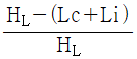
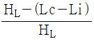
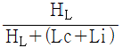
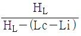
(정답률: 80%)
10. 프로판가스(C3H8) 1m3을 공기비 1.15로 완전연소시키는데 필요한 공기량은 몇 m3 인가?
- 20.23m3
- 23.8m3
- 27.37m3
- 30.7m3
(정답률: 56%)
11. 경유 1000L를 연소시킬 때 발생하는 탄소량은 얼마인가? (단, 경우의 석유환산계수는 0.92TOE/kL, 탄소배출계수는 0.837TC/TOE이다.)
- 77TC
- 7.7TC
- 0.77TC
- 0.077TC
(정답률: 78%)
12. 피해범위의 산정 절차 중 일반 공정위험의 penalty 계산에서 일반적인 흡열반응인 경우에는 어떤 수치를 적용하는가?
- 0.2
- 0.75
- 1.0
- 1.25
(정답률: 56%)
13. 프로판(C3H8) 5Sm3를 이론산소량으로 완전연소시켰을 때의 건연소가스량은 몇 Sm3인가?
- 5
- 10
- 15
- 20
(정답률: 64%)
14. 기체연료의 특징에 대한 설명 중 가장 거리가 먼 것은?
- 연소효율이 높다.
- 단위용적당 발열량이 크다.
- 고온을 얻기 쉽다.
- 자동제어에 의한 연소에 적합하다.
(정답률: 77%)
15. 유압분무식 버너의 특징에 대한 설명으로 틀린 것은?
- 구조가 간단하다.
- 유량조절 범위가 넓다.
- 소음 발생이 적다.
- 보일러 기동 중 버너 교환이 용이하다.
(정답률: 74%)
16. 유효 굴뚝높이(He)와 지표상의 최고농도(Cmax) 와의 관계에 있어서 일반적으로 He가 2배가 될 때 Cmax는?
- 2배
- 4배
- 1/2
- 1/4
(정답률: 52%)
17. 다음 액체 연료 중 비중이 가장 낮은 것은?
- 중유
- 등유
- 경유
- 가솔린
(정답률: 87%)
18. 다음 중 착화온도가 낮아지는 요인이 아닌 것은?
- 산소농도가 높을수록
- 분자구조가 간단할수록
- 압력이 높을수록
- 발열량이 높을수록
(정답률: 67%)
19. 최소 점화에너지에 대한 설명으로 틀린 것은?
- 최소 점화에너지는 연소속도 및 열전도가 작을수록 큰 값을 갖는다.
- 가연성 혼합기체를 점화시키는데 필요한 최소 에너지를 최소 점화에너지라 한다.
- 불꽃 방전 시 일어나는 에너지의 크기는 전압의 제곱에 비례한다.
- 혼합기의 종류에 의해서 변한다.
(정답률: 68%)
20. 연소가스량 10Sm3/kg, 비열 0.32kcal/Sm3℃인 어떤 연료의 저위 발열량이 6500kcal/kg이었다면 이론 연소온도는 약 몇 ℃가 되겠는가?
- 1000
- 1500
- 2000
- 2500
(정답률: 59%)
2과목: 열역학
21. PVn=const. 인 과정에서 밀폐계가 하는 일을 나타낸 것은?
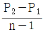
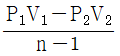
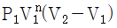
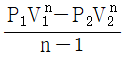
(정답률: 81%)
22. 온도 250℃, 질량 50kg인 금속을 20℃의 물 속에 넣었다. 최종 평형 상태에서의 온도가 30℃이면 물의 양은 약 몇 kg인가? (단, 열손실은 없으며, 금속의 비열은 0.5kJ/kgㆍK, 물의 비열은 4.18kJ/kgㆍK이다.)
- 108.3
- 131.6
- 167.7
- 182.3
(정답률: 52%)
23. 오토(Otto) 사이클의 열효율에 대한 설명으로 옳은 것은?
- 압축비가 증가하면 열효율은 증가한다.
- 압축비가 증가하면 열효율은 감소한다.
- Carnot cycle의 열효율보다 높다.
- 압축비는 열효율과 무관하다.
(정답률: 70%)
24. 랭킨(Rankine) 사이클에서 재열을 사용하는 목적은?
- 응축기 온도를 높이기 위해서
- 터빈 압력을 높이기 위해서
- 보일러 압력을 낮추기 위해서
- 열효율을 개선하기 위해서
(정답률: 81%)
25. 한 용기 내에 적당량의 순수 물질 액체가 갇혀 있을 때, 어느 특정 조건 하에서 이 물질의 액체상과 기체상의 구별이 없어질 수 있다. 이러한 상태가 유지되기 위한 필요충분조건으로 옳은 것은?
- 임계압력보다 높은 압력, 입계온도보다 낮은 온도
- 임계압력보다 낮은 압력
- 임계온도보다 낮은 온도
- 임계압력보다 높은 압력, 임계온도보다 높은 온도
(정답률: 62%)
26. 다음 내용과 관계있는 법칙은?
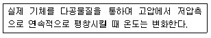
- 헨리의 법칙
- 샤를의 법칙
- 돌턴의 법칙
- 주울ㆍ톰슨의 법칙
(정답률: 67%)
27. 보일러의 게이지 압력이 800kPa일 때 수은기압계가 856mmHg를 지시했다면 보일러 내의 절대압력은 약 몇 kPa인가?
- 810
- 914
- 1320
- 1650
(정답률: 66%)
28. 다음 이상기체에 대한 Carnot cycle 중 등엔트로피 과정을 나타내는 것은?
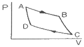
- A-C, B-C
- B-C, C-D
- D-A, B-C
- A-B, D-C
(정답률: 70%)
29. 카르노사이클로 작동하는 냉동기를 사용하여 냉동실의 온도를 -8℃로 유지하는데 5.4×106J/h의 일이 소비되었다. 외기의 온도가 5℃라 할 때, 이 냉동기의 냉동톤(RT)은 약 얼마인가? (단, 1 RT=3320 kcal/h이다.)
- 2.4
- 5.8
- 7.9
- 12.4
(정답률: 43%)
30. 다음 중 냉동 사이클의 운전특성을 잘 나타내고, 사이클의 해석을 하는데 가장 많이 사용되는 선도는?
- 온도-체적 선도
- 압력-엔탈피 선도
- 압력-체적 선도
- 압력-온도 선도
(정답률: 79%)
31. 온도가 각가 -20℃, 30℃인 두 열원 사이에서 작동하는 냉동사이클이 이상적이 ㄴ역카르노사이클(reverse Carnot cyxle)을 이루고 있다. 냉동기에 공급된 일이 15kW이면 냉동용량(냉각열량)은 약 몇 kW인가?
- 2.5
- 3.0
- 76
- 97
(정답률: 51%)
32. Rankine cycel 의 4개 과정으로 옳은 것은?
- 가역단열팽창→정압방열→가역단열압축→정압가열
- 가역단열팽창→가역단열압축→정압가열→정압방열
- 정압가열→정압방열→가역단열팽창→가역단열압축
- 정압방열→정압가열→가역단열압축→가역단열팽창
(정답률: 79%)
33. 실린더 속에 250g의 기체가 들어 있다. 피스톤에 의해 기체를 압축했더니 300kJ의 일이 필요하였고, 외부로 200kJ의 열을 방출했다면 이 기체 1kg당 내부에너지의 증가량은 몇 kJ/kg인가?
- 100
- 200
- 300
- 400
(정답률: 48%)
34. 제1종 영구 운동기관이 불가능한 것과 관계있는 법칙은?
- 열역학 제0법칙
- 열역학 제1법칙
- 열역학 제2법칙
- 열역학 제3법칙
(정답률: 71%)
35. Rankine Cycle로 작동되는 증기원동소에서 터빈 입구의 과열증기 온도는 500℃, 압력은 2MPa이며, 터빈 출구의 압력은 5kPa이다. 펌프일을 무시하는 경우, 이 Cycle의 열효율은 몇 %인가? (단. 터빈 입구의 과열증기 엔탈피는 3465kJ/kg이고, 터빈 출구의 엔탈피는 2556kJ/kg이며, 5kPa일 때 급수엔탈피는 135kJ/kg이다.)
- 21.7
- 27.3
- 36.7
- 43.2
(정답률: 49%)
36. 정상상태(steady state) 흐름에 대한 설명으로 옳은 것은?
- 특정 위치에서만 물성값을 알 수 있다.
- 모든 위치에서 열역학적 함수 값이 같다.
- 열역학적 함수값은 시간에 따라 변하기도 한다.
- 입구와 출구에서의 유체 물성이 시간에 따라 변하지 않는다.
(정답률: 61%)
37. 지름 4cm의 피스톤 위에 추가 올려져 있고, 기체가 실린더 속에 가득 차 있다. 기체를 가열하여 피스톤과 추가 50cm위로 올라간다면 기체가 한 일은 몇 J인가? (단, 추와 피스톤의 무게를 합하면 30N이고, 마찰은 없다.)
- 1.53
- 7.5
- 15
- 147
(정답률: 39%)
38. 40m3의 실내에 있는 공기의 질량은 몇 kg인가? (단, 이 공기의 압력은 100kPa, 온도는 27℃이며, 공기의 기체상수는 0.287kJ/kgㆍK이다.)
- 91
- 46
- 10
- 2
(정답률: 70%)
39. 불꽃점화 기관의 이상 사이클인 오토사이클에 대한 설명으로 틀린 것은?
- 등엔트로피 압축, 정적 가열, 등엔트로피 팽창, 정적 방열의 네 과정으로 구성된다.
- 작동유체의 비열비가 클수록 열효율이 높아진다.
- 압축비가 높을수록 열효율이 높아진다.
- 2행정 기관이 4행정 기관보다 효율이 높다.
(정답률: 69%)
40. 이상기체를 가역단열과정으로 압축하여 그 체적이 1/2로 감소하였다. 이 때 최종압력의 최초압력에 대한 비(ratio)는? (단, 비열비는 1.4이다.)
- 2.80
- 2.64
- 2.00
- 1.40
(정답률: 56%)
3과목: 계측방법
41. 특정파장을 온도계 내에 통과시켜 온도계 내의 전구 필라멘트의 휘도를 육안으로 직접 비교하여 온도를 측정하므로 정도는 높지만 측정인력이 필요한 비접촉 온도계는?
- 광고온도계
- 방사온도계
- 열전대온도계
- 저항온도계
(정답률: 79%)
42. 편차의 정(+), 부(+)에 의해서 조작신호가 최대, 최소가 되는 제어동작은?
- 미분 동작
- 적분 동작
- 온오프 동작
- 비례 동작
(정답률: 88%)
43. 단요소식 수위제어에 대한 설명으로 옳은 것은?
- 보일러의 수위만을 검출하여 급수량을 조절하는 방식이다.
- 발전용 고압 대용량 보일러의 수위제어에 사용되는 방식이다.
- 수위조절기의 제어동작은 PID동작이다.
- 부하변동에 의한 수위변화 폭이 대단히 적다.
(정답률: 77%)
44. 다음 중 그림과 같은 조작량 변화는?
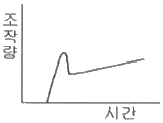
- PI동작
- 2위치동작
- PID동작
- PD동작
(정답률: 74%)
45. 보일러 수위를 육안으로 직접 확인할 수 있는 계측기는?
- 평형 반사식
- 부자식
- 다이어프램식
- 차압식
(정답률: 58%)
46. 베르누이 정리를 응용하여 유량을 측정하는 방법은?
- 로터미터(rotameter)
- 피토관(pitot-tube)
- 임펠러(impeller)
- 휘스톤브릿지(wheatstone Bridge)
(정답률: 80%)
47. 석유화학, 화약공장과 같은 화기의 위험성이 있는 곳에 사용되며 신뢰성이 높은 입력신호 전송방식은?
- 공기압식
- 유압식
- 전기식
- 유압식과 전기식의 결합방식
(정답률: 74%)
48. 온도 15℃, 기압 760mmHg인 대기 속의 풍속을 피토관으로 측정하였더니 전압(全壓)이 대기압보다 52mmH2O 높았다. 이 때 풍속은 약 몇 m/s인가? (단, 피토관의 속도계수 C는 0.9. 공기의 기체상수 R은 29.27m/K이다.)
- 16
- 26
- 33
- 37
(정답률: 41%)
49. 다음 중 와류식 유량계가 아닌 것은?
- 델타 유량계
- 스와르메타 유량계
- 칼만 유량계
- 월터만 유량계
(정답률: 60%)
50. 서미스터(Thermistor)는 어떤 현상을 이용한 온도계인가?
- 밀도의 변화
- 전기저항의 변화
- 치수의 변화
- 압력의 변화
(정답률: 82%)
51. 열전대 온도계 보호관 중 내열강 SEH-5에 대한 설명으로 틀린 것은?
- 내식성, 내열성 및 강도가 좋다.
- 상용온도는 800℃이고 최고 사용 온도는 950℃까지 가능하다.
- 유황가스 및 산화염에도 사용이 가능하다.
- 비금속관에 비해 비교적 저온측정에 사용된다.
(정답률: 70%)
52. 평형수소의 온도 20.28K는 약 몇 °R에 해당되는가?
- -254.87
- -252.87
- 36.8
- 253.87
(정답률: 61%)
53. 다음 중 차압식 유량계에 속하지 않는 것은?
- 플로트형 유량계
- 오리피스 유량계
- 벤투리관 유량계
- 플로노즐 유량계
(정답률: 75%)
54. 액주식 압력계에 사용되는 액체의 구비조건이 아닌 것은?
- 온도변화에 의한 밀도변화가 커야 한다.
- 액면은 항상 수평이 되어야 한다.
- 점도와 팽창계수가 작아야 한다.
- 모세관현상이 적어야 한다.
(정답률: 73%)
55. 표준대기압 760mmHg을 SI 단위로 변환하면 몇 kPa인가?
- 1.0132
- 10.132
- 101.32
- 1013.2
(정답률: 74%)
56. 다음 계측기 중 열관리용에 사용되지 않는 것은?
- 유량계
- 온도계
- 부르동관 압력계
- 다이얼 게이지
(정답률: 72%)
57. 측정범위가 넓고 안정성과 재현성이 우수하며 고온에서 열화가 적으나 저항온도계수가 비교적 낮은 측온저항체로서 일반적으로 가장 많이 사용되는 금속은?
- Cu
- Fe
- Ni
- Pt
(정답률: 69%)
58. 기체크로마토그래피는 기체의 어떤 특성을 이용하여 분석하는 장치인가?
- 분자량 차이
- 부피 차이
- 분압 차이
- 확산속도 차이
(정답률: 72%)
59. 다음 중 보일러 자동제어를 의미하는 약칭은?
- A.B.C
- A.C.C
- F.W.C
- S.T.C
(정답률: 73%)
60. 전자유량계의 특징에 대한 설명 중 틀린 것은?
- 압력손실이 거의 없다.
- 내식성 유지가 곤란하다.
- 전도성 액체에 한하여 사용할 수 있다.
- 미소한 측정전압에 대하여 고성능의 증폭기가 필요하다.
(정답률: 64%)
4과목: 열설비재료 및 관계법규
61. 다음 중 2종 압력용기에 해당하는 것은?
- 보유하고 있는 기체의 최고사용압력이 0.1MPa이고 내용적이 0.⑤m3인 압력용기
- 보유하고 있는 기체의 최고사용압력이 0.2MPa이고 내용적이 0.02m3인 압력용기
- 보유하고 있는 기체의 최고사용압력이 0.3MPa이고 동체의 안지름이 350mm이고, 그 길이가 1,⑤0mm인 증기헤더
- 보유하고 있는 기체의 최고사용압력이 0.4MPa이고 동체의 안지름이 150mm이고, 그 길이가 1,500mm인 압력용기
(정답률: 51%)
62. 에너지사용량은 신고하여야 하는 에너지관리대상자의 기준으로 옳은 것은?
- 연간 에너지사용량이 1천TOE 이상인 자
- 연간 에너지사용량이 2천TOE 이상인 자
- 연간 에너지사용량이 5천TOE 이상인 자
- 연간 에너지사용량이 1만TOE 이상인 자
(정답률: 73%)
63. 윤요(Ring kiln)에 대한 설명으로 옳은 것은?
- 불연속식가마이다.
- 열효율이 나쁘다.
- 소성이 균일하다.
- 종이 칸막이가 있다.
(정답률: 73%)
64. 연소실의 연도를 축조하려 할 때의 유의사항으로 가장 거리가 먼 것은?
- 넓거나 좁은 부분의 차이를 줄인다.
- 가스 정체 공극을 만들지 않는다.
- 가능한 한 굴곡 부분을 여러 곳에 설치한다.
- 댐퍼로부터 연도까지의 길이를 짧게 한다.
(정답률: 81%)
65. 다음 중 1천만원 이하의 벌금에 처할 대상자에 해당되지 않는 자는?
- 검사대상기기조종자를 정당한 사유없이 선임하지 아니한 자
- 검사대상기기의 검사를 정당한 시유없이 받지 아니한 자
- 검사에 불합격한 검사대상기기를 임의로 사용한 자
- 최저소비효율기준에 미달된 효율관리기자재를 생산한 자
(정답률: 73%)
66. 알루미늄박(箔)과 같은 금속 보온재는 주로 어떤 특성을 이용하여 보온효과를 얻는가?
- 복사열에 대한 대류
- 복사열에 대한 반사
- 복사열에 대한 흡수
- 전도, 대류에 대한 흡수
(정답률: 69%)
67. 효율관리기자재에 대한 에너지소비효율등급을 허위로 표시하였을 때의 과태료는?(관련 규정 개정전 문제로 여기서는 기존 정답인 3번을 누르면 정답 처리됩니다. 자세한 내용은 해설을 참고하세요.)
- 2천만원 이하의 과태료
- 1천만원 이하의 과태료
- 5백만원 이하의 과태료
- 3백만원 이하의 과태료
(정답률: 47%)
68. 다음 보기에서 설명하는 배관의 종류는?
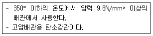
- SPPH
- SPPS
- SPHT
- SPPW
(정답률: 76%)
69. 공공사업 주관자는 에너지 사용계획의 조정 또는 보완 등의 요청받은 조치에 대하여 이의가 있는 경우 며칠 이내에 이의를 신청할 수 있는가?
- 7일
- 14일
- 30일
- 60일
(정답률: 61%)
70. 다음 중 특정 열사용 기자재가 아닌 것은?
- 주철제 보일러
- 금속 소둔로
- 2종 압력용기
- 석유 난로
(정답률: 79%)
71. 다음 중 부정형 내화물이 아닌 것은?
- 내화 모르타르
- 병형(竝型) 내화물
- 플라스틱 내화물
- 캐스터블 내화물
(정답률: 56%)
72. 에너지 공급자의 수요관리 투자계획 대상이 아닌 자는?
- 한국전력공사법에 따른 한국전력공사
- 한국가스공사법에 따른 한국가스공사
- 도시가스사업법에 따른 한국가스안전공사
- 진단에너지사업법에 따른 한국지역난방공사
(정답률: 70%)
73. 내화물 사용 중 온도의 급격한 변화 혹은 불균일한 가열 등으로 균열이 생기거나 표면이 박리되는 현상을 무엇이라 하는가?
- 스폴링
- 버스팅
- 연화
- 수화
(정답률: 80%)
74. 다음 주철관에 대한 설명 중 틀린 것은?
- 제조방법은 수직법과 원심력법이 있다.
- 수도용, 배수용, 가스용으로 사용된다.
- 인성이 풍부하여 나사이음과 용접이음에 적합하다.
- 탄소함량이 약 2% 이상인 것을 주철로 분류한다.
(정답률: 75%)
75. 상온(20℃)에서 공기의 열전도율은 몇 kcal/mㆍhㆍ℃인가?
- 0.022
- 0.22
- 0.⑤5
- 0.55
(정답률: 53%)
76. 보온재의 열전도율에 영향을 미치는 인자로서 가장 거리가 먼 것은?
- 외부온도
- 보온재의 밀도
- 함유수분
- 외부압력
(정답률: 70%)
77. 다음 중 노체 상부로부터 노구(throat), 샤프트(shaft), 보시(bosh), 노상(hearth)으로 구성된 노(爐)는?
- 평로
- 고로
- 전로
- 코크스로
(정답률: 78%)
78. 다음 중 증기 배관용으로 사용되지 않는 것은?
- 인라인 증기믹서
- 시스턴 밸브
- 사일렌서
- 벨로즈형 신축관이음
(정답률: 52%)
79. 터널가마에서 샌드 시일(sand seal)장치가 마련되어 있는 주된 이유는?
- 내화벽돌 조각이 아래로 떨어지는 것을 막기 위하여
- 열 전열의 역할을 하기 위하여
- 찬바람이 가마 내로 들어가지 않도록 하기 위하여
- 요차를 잘 움직이게 하기 위하여
(정답률: 68%)
80. 국가에너지 기본계획 및 에너지 관련시책의 효과적인 수립, 시행을 위한 에너지 총조사는 몇 년을 주기로 하여 실시하는가?
- 1년마다
- 2년마다
- 3년마다
- 5년마다
(정답률: 67%)
5과목: 열설비설계
81. 보일러의 과열에 의한 압괘(Collapse) 발생부분이 아닌 것은?
- 노통 상부
- 화실 천장
- 연관
- 가셋스테이
(정답률: 78%)
82. 부분 방사선투과시험의 검사 길이 계산은 몇 mm 단위로 하는가?
- 50
- 100
- 200
- 300
(정답률: 56%)
83. 다음 중 안전밸브에 대한 설명으로 틀린 것은?
- 안전밸브는 보일러 동체에 직접 부착시킨다.
- 안전밸브의 방출관은 단독으로 설치하여야 한다.
- 증기보일러는 2개 이상의 안전밸브를 설치해야 한다.
- 안전밸브 및 압력방출장치의 크기는 호칭 지름 50mm 이상으로 하여야 한다.
(정답률: 67%)
84. 스케일(scale)에 대한 설명 중 틀린 것은?
- 스케일로 인하여 연료소비가 많아진다.
- 스케일은 규산칼슘, 황산칼슘이 주성분이다.
- 스케일로 인하여 배기가스의 온도가 낮아진다.
- 스케일은 보일러에서 열전도의 방해물질이다.
(정답률: 78%)
85. 보일러에서 폐열회수 장치가 아닌 것은?
- 과열기
- 재열기
- 복수기
- 공기예열기
(정답률: 54%)
86. 다이어프램 밸브(diaphragm valve)에 대한 설명으로 틀린 것은?
- 역류를 방지하기 위한 것이다.
- 유체의 흐름에 주는 저항이 작다.
- 기밀(氣密)할 때 패킹이 불필요하다.
- 화학약품을 차단하여 금속부분의 부식을 방지한다.
(정답률: 80%)
87. 다음 중 강제 순환식 수관 보일러는?
- 라몬트(Lamont) 보일러
- 타쿠마(Takuma) 보일러
- 술저(Sulzer) 보일러
- 벤슨(Benson) 보일러
(정답률: 64%)
88. 맞대기 용접은 용접방법에 따라서 그루브를 만들어야 한다. 판의 두께가 19mm 이상인 경우 그루브의 현상은?
- V형
- H형
- R형
- K형
(정답률: 78%)
89. 10kg/cm2의 압력하에 2000kg/h로 증발하고 있는 보일러의 급수온도가 20℃일 때 환산증발량(kcal/h)은? (단, 발생증기의 엔탈피는 600kcal/kg이다.)
- 2152
- 3124
- 4562
- 5260
(정답률: 38%)
90. 노통보일러에서 브레이징 스페이스란 무엇을 말하는가?
- 가셋트스테이를 부착할 경우 경판과의 부착부 하단과 노통상부사이의 거리
- 관군과 가셋트스테이사이의 거리
- 동체와 노통사이의 최소거리
- 가셋트스테이간의 거리
(정답률: 69%)
91. 수질(水質)을 나타내는 ppm의 단위는?
- 1만분의 1단위
- 십만분의 1단위
- 백만분의 1단위
- 1억분의 1단위
(정답률: 79%)
92. 수관보일러의 특징에 대한 설명으로 옳은 것은?
- 10bar 이하의 중소형 보일러에 적용이 일반적이다.
- 연소실 주위에 수관을 배치하여 구성한 수냉벽을 로에 구성한다.
- 수관의 특성상 기수분리의 필요가 없는 드럼리스보일러의 특징을 갖는다.
- 열량을 전열면에서 잘 흡수시키기 위해 2-패스, 3-패스, 4-패스 등의 흐름구성을 갖도록 설계한다.
(정답률: 66%)
93. 테르밋(thermit)용접의 테르밋이란 무엇과 무엇의 혼합물인가?
- 붕사와 붕산의 분말
- 탄소와 규소의 분말
- 알루미늄과 산화철의 분말
- 알루미늄과 납의 분말
(정답률: 75%)
94. 보일러 술처리의 약제로서 pH를 조절하여 스케일을 방지하는데 주로 사용되는 것은?
- 히드라진
- 인산나트륨
- 아황산나트륨
- 탄닌
(정답률: 62%)
95. 프라이밍이나 포밍의 방지대책에 대한 설명으로 틀린 것은?
- 주증기밸브를 급히 개방한다.
- 보일러수를 농축시키지 않는다.
- 보일러수 중의 불순물을 제거한다.
- 과부하가 되지 않도록 한다.
(정답률: 82%)
96. 연관의 바깥지름이 100mm이고 최고사용압력이 10MPa인 경우 연관의 최소 두께는 얼마로 하여야 하는가?
- 14.2
- 15.8
- 17.0
- 19.2
(정답률: 50%)
97. 열교환기의 효율을 향상시키기 위한 방법으로 틀린 것은?
- 유체의 흐름 방향을 병류로 한다.
- 열전도율이 높은 재질을 사용한다.
- 전열면적을 크게 한다.
- 유체의 유속을 빠르게 한다.
(정답률: 68%)
98. 강판의 두께 12mm, 리벳의 직경 22.2mm, 피치 48mm의 1줄 겹치기 리벳 조인트가 있다. 1피치당 하중이 1200kg이라 할 때 히벳에 생기는 전당응력은 약 몇 kg/mm2인가?
- 3.1
- 16.3
- 34.5
- 53.0
(정답률: 27%)
99. 공기예열기의 효과에 대한 설명 중 틀린 것은?
- 연소효율을 증가시킨다.
- 과잉공기가 적어도 된다.
- 배기가스 저항이 줄어든다.
- 저질탄 연소에 효과적이다.
(정답률: 58%)
100. 대형보일러를 옥내에 설치할때 보일러 동체 최상부에서 보일러실 상부에 있는 구조물까지의 거리는 얼마 이상이어야 하는가?
- 60cm
- 1m
- 1.2m
- 1.5m
(정답률: 62%)
풍압은 회전수의 제곱에 비례하므로, 새로운 풍압은 (1.1667)^2 = 1.36배 증가하게 된다.
따라서, 풍압은 약 36% 상승하게 된다.
정답은 "36%"이다.